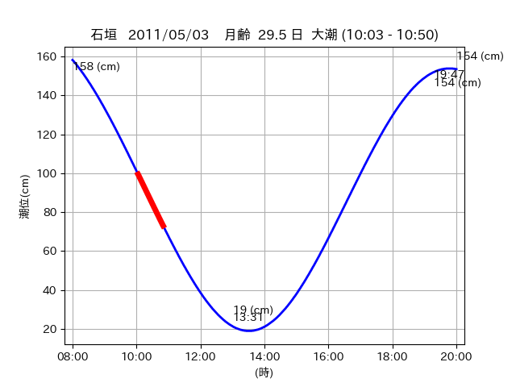
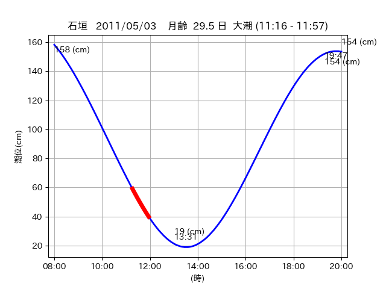

<!DOCTYPE html>
<html>
<head>
    
    <meta http-equiv="content-type" content="text/html; charset=UTF-8" />
    
        <script>
            L_NO_TOUCH = false;
            L_DISABLE_3D = false;
        </script>
    
    <style>html, body {width: 100%;height: 100%;margin: 0;padding: 0;}</style>
    <style>#map {position:absolute;top:0;bottom:0;right:0;left:0;}</style>
    <script src="https://cdn.jsdelivr.net/npm/leaflet@1.9.3/dist/leaflet.js"></script>
    <script src="https://code.jquery.com/jquery-3.7.1.min.js"></script>
    <script src="https://cdn.jsdelivr.net/npm/bootstrap@5.2.2/dist/js/bootstrap.bundle.min.js"></script>
    <script src="https://cdnjs.cloudflare.com/ajax/libs/Leaflet.awesome-markers/2.0.2/leaflet.awesome-markers.js"></script>
    <link rel="stylesheet" href="https://cdn.jsdelivr.net/npm/leaflet@1.9.3/dist/leaflet.css"/>
    <link rel="stylesheet" href="https://cdn.jsdelivr.net/npm/bootstrap@5.2.2/dist/css/bootstrap.min.css"/>
    <link rel="stylesheet" href="https://netdna.bootstrapcdn.com/bootstrap/3.0.0/css/bootstrap-glyphicons.css"/>
    <link rel="stylesheet" href="https://cdn.jsdelivr.net/npm/@fortawesome/fontawesome-free@6.2.0/css/all.min.css"/>
    <link rel="stylesheet" href="https://cdnjs.cloudflare.com/ajax/libs/Leaflet.awesome-markers/2.0.2/leaflet.awesome-markers.css"/>
    <link rel="stylesheet" href="https://cdn.jsdelivr.net/gh/python-visualization/folium/folium/templates/leaflet.awesome.rotate.min.css"/>
    
            <meta name="viewport" content="width=device-width,
                initial-scale=1.0, maximum-scale=1.0, user-scalable=no" />
            <style>
                #map_1b7fb61c1678cf64b5b4072fc1d43401 {
                    position: relative;
                    width: 2048.0px;
                    height: 1600.0px;
                    left: 0.0%;
                    top: 0.0%;
                }
                .leaflet-container { font-size: 1rem; }
            </style>
        
</head>
<body>
    
    
            <div class="folium-map" id="map_1b7fb61c1678cf64b5b4072fc1d43401" ></div>
        
</body>
<script>
    
    
            var map_1b7fb61c1678cf64b5b4072fc1d43401 = L.map(
                "map_1b7fb61c1678cf64b5b4072fc1d43401",
                {
                    center: [24.479, 124.297],
                    crs: L.CRS.EPSG3857,
                    ...{
  "zoom": 12,
  "zoomControl": true,
  "preferCanvas": false,
}

                }
            );

            

        
    
            var tile_layer_7e41eabde90d4251c99dbe4d1289e034 = L.tileLayer(
                "https://cyberjapandata.gsi.go.jp/xyz/seamlessphoto/{z}/{x}/{y}.jpg",
                {
  "minZoom": 0,
  "maxZoom": 18,
  "maxNativeZoom": 18,
  "noWrap": false,
  "attribution": "\u5730\u7406\u9662\u5730\u56f3",
  "subdomains": "abc",
  "detectRetina": false,
  "tms": false,
  "opacity": 1,
}

            );
        
    
            tile_layer_7e41eabde90d4251c99dbe4d1289e034.addTo(map_1b7fb61c1678cf64b5b4072fc1d43401);
        
    
            var marker_9bfa1423807fafb33bff6bf23d7af79d = L.marker(
                [24.476, 124.2925],
                {
}
            ).addTo(map_1b7fb61c1678cf64b5b4072fc1d43401);
        
    
            var icon_72c9b53db48e9bd9a2efc41812f3bc84 = L.AwesomeMarkers.icon(
                {
  "markerColor": "orange",
  "iconColor": "white",
  "icon": "info-sign",
  "prefix": "glyphicon",
  "extraClasses": "fa-rotate-0",
}
            );
        
    
        var popup_87110fe101bfd038878fac5fcd4ff612 = L.popup({
  "maxWidth": "100%",
});

        
            
                var html_f9333efb8a0d48fd7764ad18e2b80cf2 = $(`<div id="html_f9333efb8a0d48fd7764ad18e2b80cf2" style="width: 100.0%; height: 100.0%;"><table><tr><td></td></tr><tr><td><center>20110503 No.1 </center></table></td></tr></table</div>`)[0];
                popup_87110fe101bfd038878fac5fcd4ff612.setContent(html_f9333efb8a0d48fd7764ad18e2b80cf2);
            
        

        marker_9bfa1423807fafb33bff6bf23d7af79d.bindPopup(popup_87110fe101bfd038878fac5fcd4ff612)
        ;

        
    
    
                marker_9bfa1423807fafb33bff6bf23d7af79d.setIcon(icon_72c9b53db48e9bd9a2efc41812f3bc84);
            
    
            var poly_line_7a6aa0624a52411eda5a573a82996c81 = L.polyline(
                [[24.476, 124.2925], [24.4763, 124.2957]],
                {"bubblingMouseEvents": true, "color": "#FF00FF", "dashArray": null, "dashOffset": null, "fill": false, "fillColor": "#FF00FF", "fillOpacity": 0.2, "fillRule": "evenodd", "lineCap": "round", "lineJoin": "round", "noClip": false, "opacity": 1.0, "smoothFactor": 1.0, "stroke": true, "weight": 3}
            ).addTo(map_1b7fb61c1678cf64b5b4072fc1d43401);
        
    
            var marker_d8350fd876c1b9ca2520dffd2d27276d = L.marker(
                [24.5054, 124.2978],
                {
}
            ).addTo(map_1b7fb61c1678cf64b5b4072fc1d43401);
        
    
            var icon_429defc65ef9d45d1193a490897b9f0a = L.AwesomeMarkers.icon(
                {
  "markerColor": "orange",
  "iconColor": "white",
  "icon": "info-sign",
  "prefix": "glyphicon",
  "extraClasses": "fa-rotate-0",
}
            );
        
    
        var popup_cef647b56eeee0f623a429e3bd978fff = L.popup({
  "maxWidth": "100%",
});

        
            
                var html_71a3ca26134425fa90d32e96ba87844d = $(`<div id="html_71a3ca26134425fa90d32e96ba87844d" style="width: 100.0%; height: 100.0%;"><table><tr><td></td></tr><tr><td><center>20110503 No.2 </center></table></td></tr></table</div>`)[0];
                popup_cef647b56eeee0f623a429e3bd978fff.setContent(html_71a3ca26134425fa90d32e96ba87844d);
            
        

        marker_d8350fd876c1b9ca2520dffd2d27276d.bindPopup(popup_cef647b56eeee0f623a429e3bd978fff)
        ;

        
    
    
                marker_d8350fd876c1b9ca2520dffd2d27276d.setIcon(icon_429defc65ef9d45d1193a490897b9f0a);
            
    
            var poly_line_8cbb64d949c35af5c03fea73798cda31 = L.polyline(
                [[24.5054, 124.2978], [24.4983, 124.2962]],
                {"bubblingMouseEvents": true, "color": "#00FFFF", "dashArray": null, "dashOffset": null, "fill": false, "fillColor": "#00FFFF", "fillOpacity": 0.2, "fillRule": "evenodd", "lineCap": "round", "lineJoin": "round", "noClip": false, "opacity": 1.0, "smoothFactor": 1.0, "stroke": true, "weight": 3}
            ).addTo(map_1b7fb61c1678cf64b5b4072fc1d43401);
        
    
            var marker_4f7d2fa7c854a22d937f7258a3ae799e = L.marker(
                [24.478, 124.294],
                {
}
            ).addTo(map_1b7fb61c1678cf64b5b4072fc1d43401);
        
    
            var icon_8b555d1d27e45c8350739fa2a3b7895e = L.AwesomeMarkers.icon(
                {
  "markerColor": "orange",
  "iconColor": "white",
  "icon": "info-sign",
  "prefix": "glyphicon",
  "extraClasses": "fa-rotate-0",
}
            );
        
    
        var popup_ef195e832237b58c393aa7e5adc80edc = L.popup({
  "maxWidth": "100%",
});

        
            
                var html_461194a276c6afca85962b35ba9225cd = $(`<div id="html_461194a276c6afca85962b35ba9225cd" style="width: 100.0%; height: 100.0%;"><table><tr><td></td></tr><tr><td><center>20110503 No.3 </center></table></td></tr></table</div>`)[0];
                popup_ef195e832237b58c393aa7e5adc80edc.setContent(html_461194a276c6afca85962b35ba9225cd);
            
        

        marker_4f7d2fa7c854a22d937f7258a3ae799e.bindPopup(popup_ef195e832237b58c393aa7e5adc80edc)
        ;

        
    
    
                marker_4f7d2fa7c854a22d937f7258a3ae799e.setIcon(icon_8b555d1d27e45c8350739fa2a3b7895e);
            
    
            var poly_line_8e79599880b7ec3c133982f2dbab9b29 = L.polyline(
                [[24.478, 124.294], [24.4795, 124.2996]],
                {"bubblingMouseEvents": true, "color": "#FF00FF", "dashArray": null, "dashOffset": null, "fill": false, "fillColor": "#FF00FF", "fillOpacity": 0.2, "fillRule": "evenodd", "lineCap": "round", "lineJoin": "round", "noClip": false, "opacity": 1.0, "smoothFactor": 1.0, "stroke": true, "weight": 3}
            ).addTo(map_1b7fb61c1678cf64b5b4072fc1d43401);
        
</script>
</html>